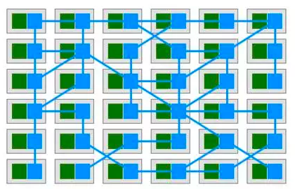

Service Mesh
简单介绍
(意思是我也不太懂)
Presentation by Zado, the day after Women's Day, 2018
Service Mesh的提出
微服务架构的流行
服务间的通信
解决方案
服务代码自身: 业务逻辑之外的事情
类库(service-tracing)："胖"客户端
框架(Spring Cloud): 成本大
服务通信的基础层
可靠、稳定
熔断、追踪
认证、权限
轻量、透明
SideCar
service <-> sidecar

Service Mesh
基础设施层
实现请求传递
轻量的网路代理
应用程序透明
Istio
提供一种简单的方式来建立已部署的服务的网络，具备负载均衡，服务到服务认证，监控等等功能，而不需要改动任何服务代码。
Google/IBM/Lyft (https://github.com/istio/istio)
Envoy
- HTTP／1.1, HTTP/2, gRpc, TCP, etc
- 服务发现:从Pilot得到服务发现信息
- 过滤、负载均衡、健康检查
- 执行路由规则(Rule):规则来自Polit,包括路由和目的地策略
- 加密、认证
- metric, logging, trace(zipkin)
Pilot
- 请求路由
- 服务发现和负载均衡
- 故障处理
- 规则配合
- .......